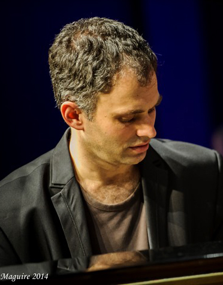

Benjamin Martin
Identified by Newsday NY as an ‘Excellent craftsman’, The New York Times as ‘Distinctive, arresting in style’ and The Australian in 2000 as ‘The best young talent for the new millennium’, pianist/composer Benjamin Martin has become known as an artist of exceptional versatility and subtlety of expression. A child-prodigy, Benjamin aged thirteen memorized Schumann’s Carnaval in two days, and by the age of eighteen had a repertoire of some two-hundred and fifty works plus twenty-five concertos.
A graduate of the Juilliard School where he was a student of John Browning, Benjamin has received numerous awards including the Queen Elizabeth Grant, first prize in the Hepzibah Menuhin Memorial Award, The Marten Bequest Scholarship and two scholarships to the Tanglewood Summer Festival (as a pianist in 1987 and composer in 1988), where he was first introduced to Leonard Bernstein. His teachers have included Alexander Semetsky, Maria Clodes-Jaguaribe, Stephen McIntyre and Dorothy Taubman.
He has performed internationally alongside artists such as Alina Ibragimova, Joshua Bell, Pekka Kuusisto, Richard Tognetti, and many other well recognized artists. In 2013 he performed with Barry Humphries and the ACO in a national tour, and has also given numerous Premieres including the New York Premiere of Two Pianos by Morton Gould (associate artist M.Herskowitz) and Brett Dean’s Elegy (with cellist Emma-Jane Murphy).
Benjamin has developed a life-long interest in conceptual arguments formed often – but not exclusively – upon musically-related and interrelated ideas. As a result of this skill he is often consulted in matters pertaining to musical discourse, which extend beyond traditional boundaries of thought. Similarly, teaching and chamber-music is no less an important extension of one’s musical activities, hence why Benjamin has always been a dedicated teacher at The University of Melbourne Music Faculty and pianist for Firebird Trio.
< Previous artist
Domenico TaraborrelliNext artist >
Arthur AthanNext Concert